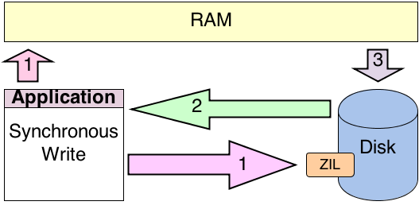

TrueNAS and the ZFS Filesystem
Vivian Hafener
What is ZFS?
ZFS, otherwise known as the Zettabyte File System, was initially developed in 2006 by Sun microsystems in an attempt to address issues with data protection and integrity that other filesystems have. After Sun was acquired by Oracle, the OpenZFS project was started by several former Sun employees in order to continue work on the filesystem. This work was largely successful, and has resulted in one of the most advanced and versatile file systems available today.
Source: Aspen Systems
Source: Victor's Blog
Source: Sven and the art of computer maintinence
Source: Ars Technica
ZFS RAIDZ
- Parity-based & Striped
- Intended to prevent RAID-5 write-hole
- Dynamic stripe width
- Parity bit flushed simultaneously
- No chance of keeping data but loosing parity (disks out of sync). You either have data or you don't.
- All of this is done without special hardware: ZRAID is ONLY software RAID.
- Cheap SATA drives tend to work better than more expensive SAS or fiber drives.

Copy-on-Write
- Instead of directly modifying data blocks, copies are edited instead
- Once the write is complete, pointers are adjusted to point to the new location of the block
- The old block remains in place until it is needed by the filesystem
- Snapshots are inexpensive
- Filesystem works towards end of the disk before deleting anything

ZIL and SLOG
ZIL with no SLOG
Once 2 is recieved, data can be flushed from RAMARC to disk
ZIL with SLOG

The presence of high-speed SLOG allows for final write to disk sooner.
Other features of ZFS
- Virtually limitless capacity and scalability with both SSDs and HDDs
- Copy-on-Write architecture for data safety and efficient snapshotting
- Integrated software-defined RAID with checksums and validation
- High-performance transparent compression and inline deduplication
- Native encryption at the disk, pool, or dataset level
- Integrated Read/Write caching with options for all-flash or hybrid pools
- Integrated with FreeBSD, Linux, and many other operating systems
- Max fs size of 256 quadrillion yobibytes (6 x 10^22 times the current size of the internet), with a max file size of 16 exbibytes.
- 2^48 files per directory, basically unlimited files per filesystem.